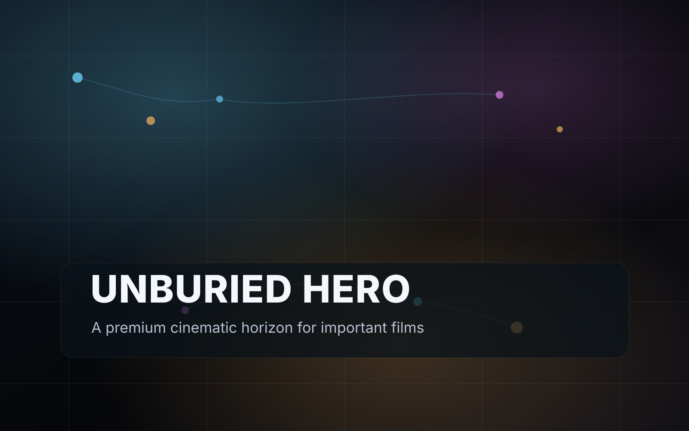

High-friction independent filmmakers
Directors, producers, and small rights-holding teams with politically sensitive, taboo, inconvenient, or nuance-heavy films that struggle to find fair distribution.
UNBURIED is a filmmaker-first distribution network built for high-friction independent films that get buried by gatekeepers, softened by brand-safe systems, or stranded in fragmented release chaos.
Built for directors, producers, rights holders, community hosts, educators, curators, aligned capital, and backers who are done watching vital stories disappear.

A world where truth-bearing films can circulate through living communities, not die in gatekept bottlenecks.
Direct purchases, local rights sales, screening revenue, support campaigns, audience ownership, and resilient rails.
Start where the pain is hottest: films facing structural distribution friction. Expand under a premium umbrella brand.
Join early. Help shape the network. Back the first wave of films that should never have been buried in the first place.
The real pain is not only censorship. It is suppression plus fragmentation plus financial fragility plus operational overload.
The core buyer is not “everyone who likes indie film.” It is the filmmaker or rights-holding team carrying a culturally important film that the normal system is structurally bad at handling.
Directors, producers, and small rights-holding teams with politically sensitive, taboo, inconvenient, or nuance-heavy films that struggle to find fair distribution.
Educators, cultural venues, organizers, podcasters, activist networks, nonprofits, and local nodes who want to bring meaningful films to their people without legal confusion.
Builders and capital partners who care about open money, artist entrepreneurship, resilient rails, and direct relationships between creators and communities.
It will look like a premium rights network that combines direct commerce, community screenings, clean catalog curation, and resilient payment options in one operating system.

We unify the parts filmmakers currently have to stitch together alone: funding, release, direct sales, local screenings, educational rights, audience ownership, and resilient settlement rails.
No open sludge. No low-signal flood. A selective home for films facing structural distribution friction.
Rent, buy, gift, host, license, support, and later fund. Keep rights by default.
Local hosts, educators, venues, and partner communities become the film’s living distribution engine.
Mainstream rails for ease. Resilient rails for continuity. Portable audiences so no single vendor owns the whole organism.
This product is built around the flow real filmmakers need, not the categories a traditional distributor prefers.
Run support campaigns, completion pushes, and pre-sale offers before release.
Open rentals, purchases, gifts, and rights-aware viewing windows.
Approve local screenings, educational access, and community distribution rights.
Own the audience relationship and keep the film alive beyond one burst of attention.
Viewers find films through trusted curation, issue hubs, and host networks.
Hosts bring films to towns, schools, venues, and communities.
Backers help upcoming titles finish and launch with more leverage.
Stories move through people, not just feeds, and revenue reaches creators directly.
A sharp, shareable report that names the seven chokepoints most likely to bury an important film. Built to trigger the kind of “this is exactly us” recognition that makes founders and rights-holders forward it to their teams.
Yes. A lead magnet makes sense here because dream targets do not want generic newsletters. They want clarity that names what is wrong and what to do next.
Use one or many Formspree endpoints. This page is wired so you can swap them in within minutes.
| Revenue lane | What the buyer does | Why it matters | Starting split logic |
|---|---|---|---|
| VOD rentals and purchases | Rent, buy, gift, pre-order | Fastest path to direct creator revenue | 85% rights holder / 10% platform / 5% affiliate |
| Community screenings | Host a local event with rights cleared in-platform | Turns passive viewership into movement-level circulation | 60% rights holder / 25% host / 15% platform |
| Educational licensing | License for campus, classroom, library, or institution | Long-tail revenue and durable legitimacy | 70% rights holder / 20% platform / 10% referrer |
| Funding campaigns | Support, pre-buy, fund completion, reserve screenings | Supports up-and-coming films before release | 95% project / 5% platform plus fees |
Dream targets do not buy “another platform.” They move when the message tells the truth about what they are carrying, names the hidden pattern, and gives them a believable path out.
The lead magnet is designed to be forwarded with language like “This is the thing I have been trying to explain,” which pulls co-founders, producers, operators, and partner communities into one shared lens instead of one lonely opt-in.
Not just hosting. Not just fundraising. Not just screenings. Not just crypto theater. A coherent path from film to revenue to audience to long-tail circulation.
Broad umbrella brand. Explicit high-friction flagship lane. That keeps the mission sharp without reducing the whole company to a single oppositional identity.
Yes, in layers: support campaigns and pre-sales first, ecosystem completion funds second, regulated investment handoff later if true profit participation is involved.
Because normal humans still need dead-simple checkout. The resilient move is mainstream rails for ease and decentralized rails where they add continuity and self-custody benefits.
Because dream targets share diagnosis, not generic updates. A sharp report creates recognition, cluster formation, and better-quality waitlist growth.
UNBURIED is built for teams who know their film matters and are done waiting for the existing system to behave like it does.

No more cobbling together a payment tool, a host spreadsheet, a ticketing app, a video host, and a half-broken audience list.
Monetize through VOD, purchases, gifts, educational licenses, local screenings, and later support campaigns or completion pushes.
Buyers, supporters, hosts, educators, and affiliates become an asset you can keep, not a shadow audience trapped inside someone else’s ecosystem.
This is the detailed promise, the operational logic, and the economic structure serious teams will want to see before they back a new category.
| Lane | Buyer journey | Suggested split | Operational note |
|---|---|---|---|
| Rental / purchase | Film page → checkout → secure playback | 85 / 10 / 5 | Rolling reserve held back for disputes and refunds |
| Community screening | Host request → approval → ticketing → event settlement | 60 / 25 / 15 | Event holdback released after a short post-event buffer |
| Educational license | Institution inquiry → instant tier or manual quote | 70 / 20 / 10 | Long-tail revenue lane with higher service complexity |
| Support campaign | Story page → pledge or pre-buy → updates | 95 / 5 | Best for upcoming films and campaign-driven releases |
Mainstream rails should make checkout effortless. Resilient rails should make the system harder to choke. The viewer never needs to feel the complexity unless they choose it.

A cleaner, more technical companion to the Narrative Friction Index for producers and rights holders who want the deeper architecture view before they join the wave.
UNBURIED turns a messy licensing process into a guided flow that lets aligned people gather others around films that matter.

The screening network is not a side feature. It is the living distribution engine.
Small, trusted groups. No public ticketing. Good for intimate introductions and invite-only salons.
For grassroots organizers, nonprofits, and local cultural networks that want to gather a real audience.
For libraries, student groups, teachers, and institutions that need a clean license and clear usage terms.
For theaters, micro-cinemas, coworking venues, and trusted partners selling tickets at scale.
Browse only titles available for hosting and see what kind of events they support.
City, venue, audience size, ticket range, event type, and timing.
Depending on the rights-holder rules and your trust tier.
Use ready-made promo assets, sell tickets, and get a clear settlement summary after the event.

Hosts are rewarded for doing the work of convening, promoting, and filling the room.
No murky permission threads. No uncertainty about ticketing, public promotion, or audience size bands.
Over time, the platform can certify reliable hosts, which reduces approval friction and increases access to higher-signal titles.
Hosts, curators, translators, and ambassadors can be recognized and rewarded for contribution. The point is to strengthen circulation, not turn serious films into a dopamine casino.
A compact download for early host leads: event types, license logic, promotion tips, room setup, and how to turn one screening into a local chapter of trust.
UNBURIED is designed as a filmmaker-first commerce network that can monetize truth-bearing films through direct sales, local screenings, licensing, and community-supported launches.

core revenue lanes from the start: VOD, screenings, educational, funding
coherent operating system instead of a fragile stack of disconnected tools
need to make the company live or die by advertiser approval
The brand stays broad enough to scale. The wedge stays sharp enough to matter. The economics stay grounded in transactions and rights, not just attention.
This project is especially aligned for people who care about creator sovereignty, direct seller economics, self-custody options, open protocols, and systems that reduce dependency on centralized choke points.
It is closer to a rights-aware seller network for film than a generic content play. That matters because seller tools, payment rails, audience ownership, and self-custody patterns are more defensible than trying to out-feed incumbents on generic entertainment.
Brand trust, title review, rights verification, policy, and support stay coherent.
Mainstream processors for ease. Fallback or self-custody rails where continuity matters.
Primary commercial rail, premium DRM rail, and decentralized backup path.
Hosts, educators, curators, and issue communities become the growth engine.
Curated titles, direct checkout, secure playback, basic host requests, reserve logic.
25 to 75 titles, screening requests, filmmaker dashboard, event pages, waitlist flywheel.
Fallback crypto acceptance, better rights controls, educational licensing, audience export.
Support campaigns, completion funds, optional stablecoin settlements, regulated investment handoff.
A clean investor brief covering category, problem, why now, model, moat, architecture, risk map, and phased go-to-market.